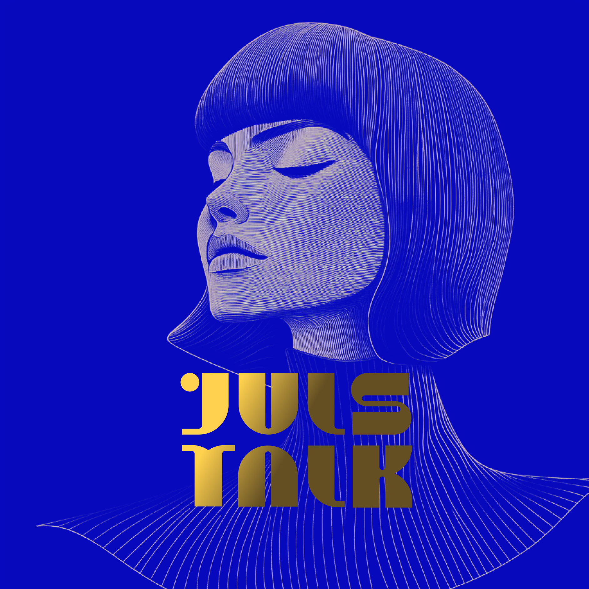
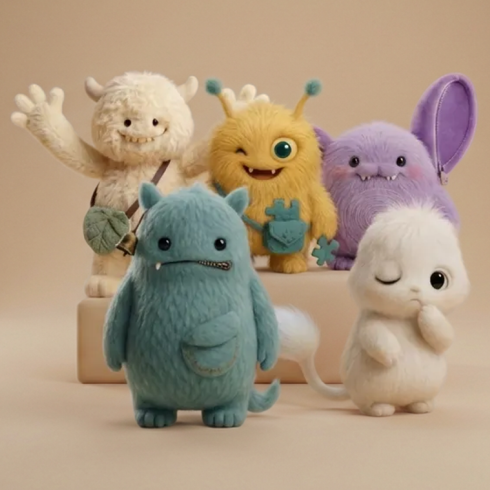
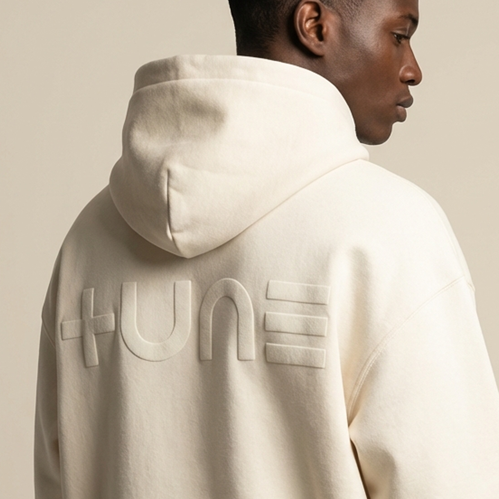

banner production
social content
ad variations
landing pages
site design
slide design
motion design
brand identity
creative direction
positioning
strategy
human taste




BRAND OS
Lossless execution.
Strategy is useless if it can’t survive production.
We turn positioning into a system.
The system ships.
What we install
- source of truth (text)
- tone + rules
- templates + pipelines
- QA: evals, checks, citations
- tone + rules
- templates + pipelines
- QA: evals, checks, citations
Output
Ads. Landings. Decks. Campaigns.
Same idea. Every touchpoint.
Same idea. Every touchpoint.
brand_os@tune.ac